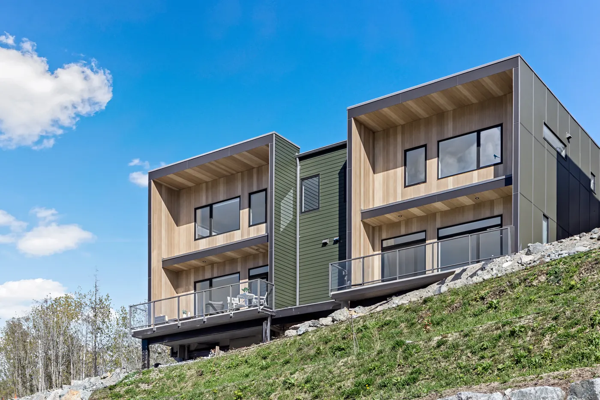
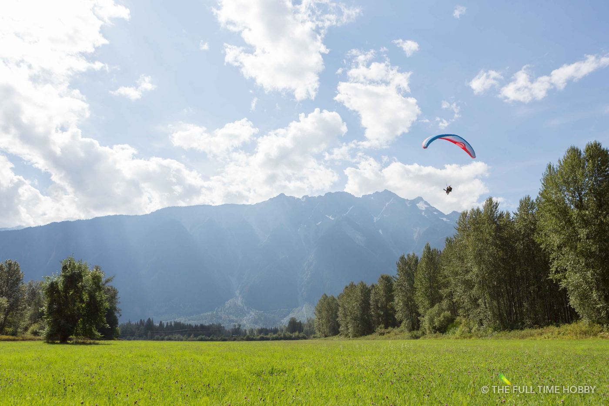
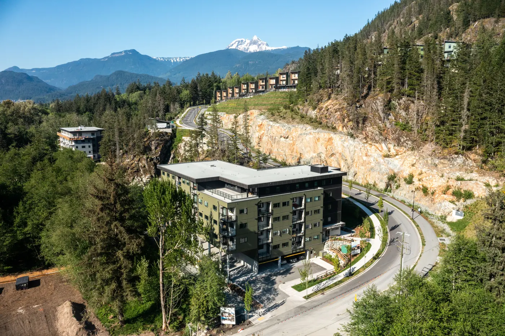
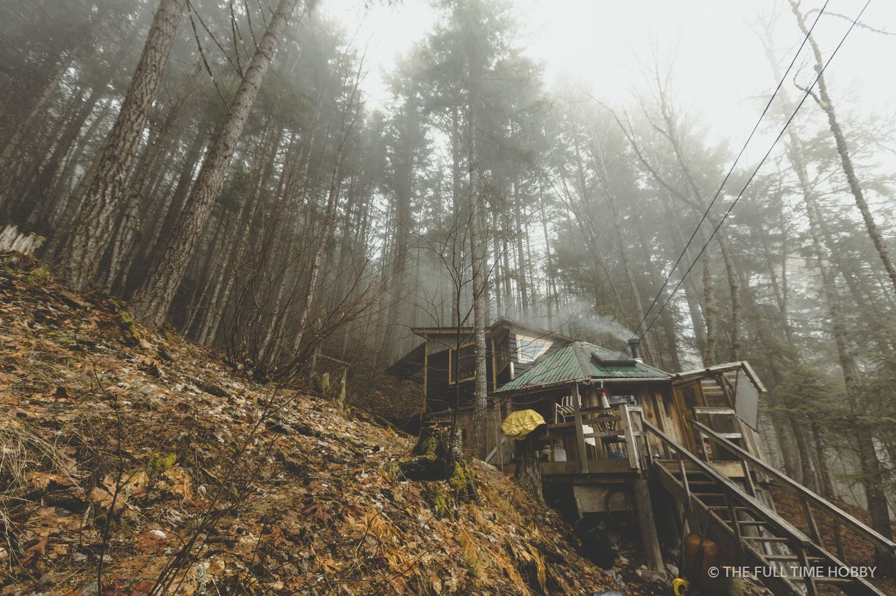
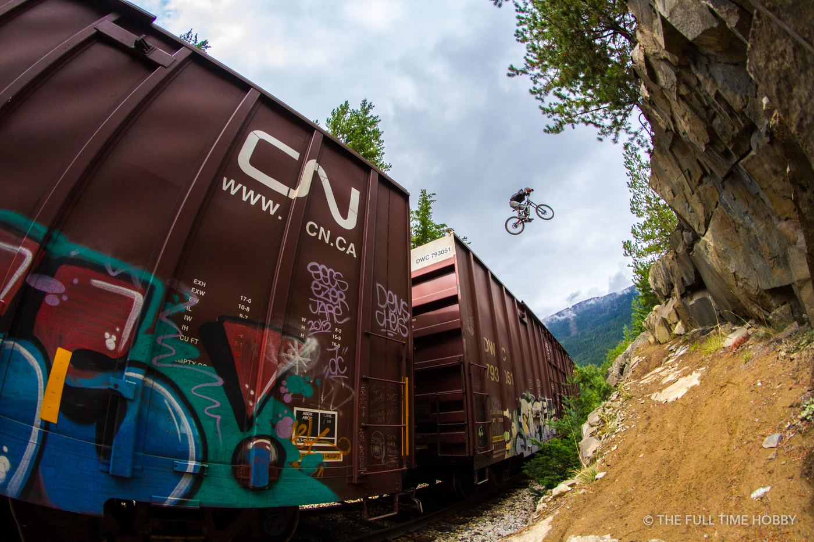
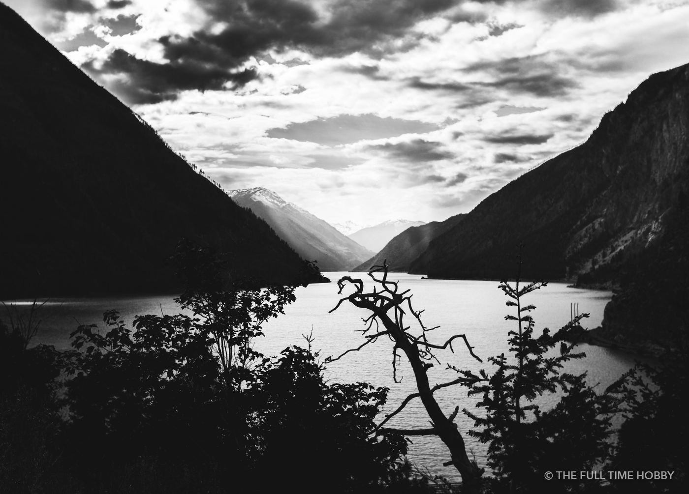

Recent work
Interiors, exteriors and aerials
Recent real estate and drone work shot in Squamish and Howe Sound. These are examples of my style and quality, not photos of properties in Pemberton.






Pemberton & Mount Currie, BC
Pemberton is acreage country: farms, big lots, horses and a valley ringed by peaks. I photograph the homes and the land they sit on, with interiors, exteriors and drone aerials that show what ground-level photos can’t.
Pemberton properties are rarely just a house. They’re a house plus a hayfield, a barn, a creek, a mountain view and a long gravel drive. A single front-of-house photo can’t say that, which is why I treat aerials and wide exteriors as essential here rather than optional.
Interior photography still matters. Rural homes often have rich natural light, big windows onto the valley and wood-and-stone finishes that photograph beautifully when exposed properly.

What I shoot in Pemberton
Pemberton Meadows and the surrounding valley, with the lot lines, outbuildings and views shown from the air.
Barns, arenas, pasture and fencing documented clearly, so buyers understand what they’re getting.
Pemberton Village and the newer subdivisions, shot like a regular listing with a bit of valley context.
Homes and land toward Mount Currie and the lake, where the setting is the headline.
Recent work
Recent real estate and drone work shot in Squamish and Howe Sound. These are examples of my style and quality, not photos of properties in Pemberton.

The setting
Photos from my own library, shot in and around the area. Good property photography borrows from the same eye for light and place.



Pemberton is one of the best places in the corridor for drone photography because the lots are large and the valley is open. It also has its own airspace considerations: the valley sees gliders and paragliders on good days and has an airport, so I check airspace and plan flights carefully. I’ll also confirm landowner permission and any local restrictions before the shoot.
For listings with real acreage, I usually recommend a mix of high overview shots, low oblique shots of the house and outbuildings, and a top-down for the lot shape. More in my guide to aerial photos for Sea to Sky listings.
Booking
Pemberton is a little over an hour from my base in Squamish. Pairing it with a Whistler shoot on the same day is the most efficient way to book.
Send the address, size, what you want covered and your listing date.
I send a short prep checklist and confirm airspace and access for any aerials.
Interiors, exteriors and aerials on the day, timed for the best light.
Edited photos in a private online gallery with one-click Download All.
Questions
Yes. These are where aerials make the biggest difference, and I plan a shot list that shows the house, the land and the outbuildings.
Yes, including Pemberton Meadows, One Mile Lake, the Village and the area toward Mount Currie and Lillooet Lake.
I check airspace before any flight. Properties near the airport may need authorization or may not be flyable, and I’ll tell you up front.
For acreage and larger lots, almost always. They show boundaries, access and setting in a way ground photos can’t.
Yes, they’re close, and grouping them keeps the cost down. Send both addresses and I’ll quote them together.
Send me the address and your timeline. I’ll get back to you with a quote and available dates.
Get a Quote